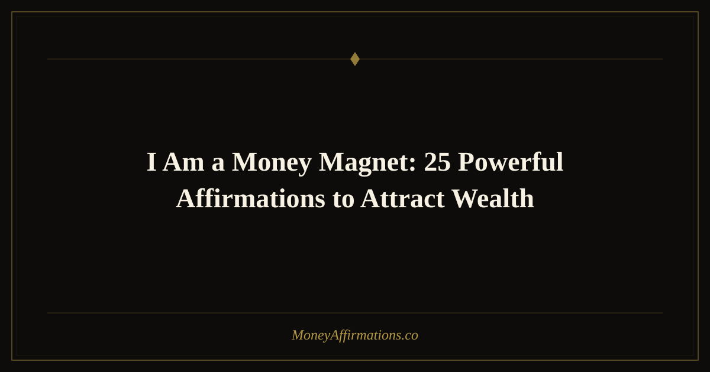

I Am a Money Magnet: 25 Powerful Affirmations to Attract Wealth

Few phrases in the world of financial affirmations carry as much energetic punch as "I am a money magnet." Short, declarative, and impossible to misunderstand, this statement does something remarkable the moment you say it: it repositions your identity. You stop being someone who chases money and become someone money is drawn to. That single shift in perspective can quietly rewire the way you think, act, and make decisions around wealth every single day.
This post gives you 25 carefully crafted variations and expansions of this powerful phrase, a clear explanation of why it works so well, and a practical guide for using these affirmations to see real results. Whether you are just starting out with affirmation practice or looking to deepen an existing routine, these statements are ready to work for you.
What are money magnet affirmations?
Money magnet affirmations are present-tense, first-person statements that anchor your identity to the idea of naturally attracting wealth. The word "magnet" is key — it implies effortless pull rather than strained pursuit. Traditional money affirmations often focus on what you want to have; money magnet affirmations focus on what you already are.
Neuroscience research on self-affirmation shows that repeating identity-based statements activates the brain's reward circuits and can reduce the threat response that many people have around money topics. When you consistently declare "I am a money magnet," you reinforce a self-concept that makes wealth feel natural, accessible, and deserved. Over time this changes not just how you feel but how you behave — the opportunities you notice, the risks you take, and the financial habits you build.
25 money magnet affirmations
- I am a money magnet and wealth flows to me from every direction.
- I am a money magnet, and financial opportunities find me wherever I go.
- I am a money magnet and I attract large sums of money with ease.
- I am a money magnet and abundance is my natural state of being.
- I am a money magnet and money loves to be in my presence.
- I am a money magnet and my bank account grows bigger every day.
- I am a money magnet and I draw wealth into my life effortlessly.
- I am a powerful money magnet and prosperity is always seeking me out.
- I am a money magnet and I am open to receiving wealth from unexpected sources.
- I am a money magnet and financial abundance flows through me constantly.
- Money is attracted to my energy and I welcome it fully.
- I attract wealth naturally because I am aligned with abundance.
- Every day my magnetic attraction to money grows stronger and more powerful.
- I radiate the energy of prosperity and wealth is drawn to me in return.
- I am a limitless money magnet and there is no ceiling on what I can attract.
- My mind, body, and spirit are fully aligned with the frequency of financial abundance.
- I am a money magnet and I receive money graciously and with deep gratitude.
- The universe recognizes me as a money magnet and delivers wealth to me constantly.
- I am a money magnet and I easily attract clients, contracts, and cash flow.
- I am a money magnet and my positive relationship with money multiplies my wealth.
- Wealth recognizes me and returns to me again and again.
- I am a money magnet and financial breakthroughs are a normal part of my life.
- I attract money because I believe in my own value and worth completely.
- I am a money magnet and I use wealth wisely to create even more abundance.
- I am a powerful money magnet and my capacity for wealth is infinite.
How to use these affirmations
Consistency matters more than intensity. You do not need a two-hour ritual — you need a daily habit. Pick three to five of the affirmations above that resonate most strongly and commit to repeating them at the same time each day. The morning is ideal because you set the tone for the entire day before any limiting beliefs have a chance to surface.
Speak the affirmations out loud whenever possible. Hearing your own voice declare "I am a money magnet" engages more of your nervous system than silent reading does. Stand in front of a mirror if you can — this adds a layer of emotional intensity that accelerates the reprogramming process.
Write them down as well. Journaling your affirmations by hand slows the process down and forces your brain to fully process each word. After writing, pause and notice any resistance that comes up. That resistance is the old belief pattern surfacing — acknowledge it, then return to the affirmation with even more conviction.
Finally, pair each affirmation with a genuine feeling of gratitude for wealth already present in your life, no matter how small. Emotion is the accelerant that turns words into belief.
Tips to make them work faster
- Use them right after waking up. Your brain is in a theta wave state for the first few minutes of consciousness, making it highly receptive to new beliefs.
- Combine with visualization. As you say each affirmation, hold a brief mental image of what that reality looks like — your bank balance, your lifestyle, the feeling of financial ease.
- Set phone reminders. A midday or afternoon prompt pulls you back into your money magnet identity before stress or scarcity thinking can take hold.
- Take aligned action. Affirmations work fastest when paired with small, consistent actions that signal belief — reviewing your budget, applying for an opportunity, or simply saying yes to a financial conversation you would normally avoid.
- Track evidence. Keep a small log of every financial win, no matter the size. Seeing the evidence builds genuine belief, which amplifies the affirmations further.
Frequently Asked Questions
How long does it take for "I am a money magnet" affirmations to work?
Most people notice a shift in their emotional relationship with money within two to three weeks of daily practice. External results — new opportunities, unexpected income, or improved financial decisions — often follow within one to three months. The timeline depends on how consistently you practice, the depth of any existing scarcity beliefs, and how well you pair affirmations with aligned action in your daily life.
Can I use these affirmations even if I am currently in debt?
Absolutely. In fact, using money magnet affirmations while in debt is one of the most powerful things you can do, because it begins to shift the mindset that may have contributed to financial struggle in the first place. The goal is not to deny your current situation but to establish a new identity that guides you toward better decisions and greater opportunities going forward. Start with affirmations that feel believable and build from there.
Should I say affirmations I do not fully believe yet?
Yes — this is exactly the point. Affirmations work by planting seeds before the harvest arrives. If you only affirmed things you already believed, you would never grow beyond your current reality. The slight stretch is healthy. Focus on the feeling of possibility rather than demanding instant certainty. Over time, repetition and evidence will close the gap between the statement and your lived belief.
Ready to go deeper? Explore the full money affirmations collection for hundreds of additional statements organized by theme, goal, and emotional state.